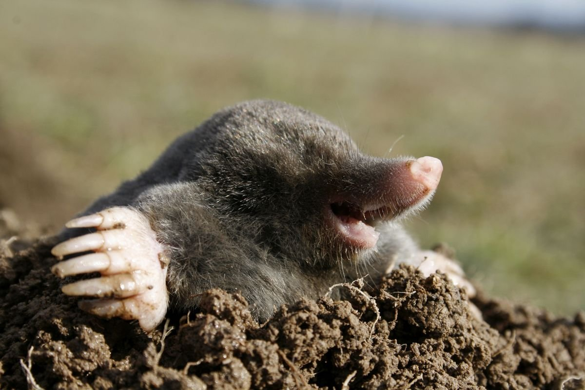
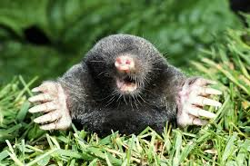

Кроты — насекомоядные мелких и средних размеров: длина тела от 5 до 21 см; масса от 9 до 170 г. Они (кроме землеройковых кротов, живущих на поверхности) приспособлены к подземному, роющему образу жизни. Туловище у них вытянутое, округлое, покрытое густым, ровным, бархатистым мехом.
Питается крот почвенными беспозвоночными, среди которых преобладают дождевые черви. В меньшем количестве поедает слизней, мокриц, насекомых и их личинок (майских жуков, щелкунов, медведок, гусениц), многоножек, пауков.
 